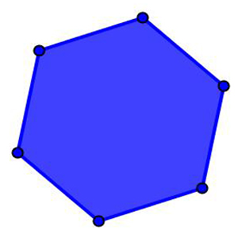
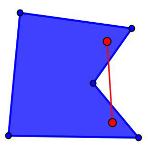

Polígono convexo
Polígono convexo é um polígono para o qual quaisquer dois pontos interiores podem ser ligados por uma reta totalmente contida no próprio polígono.

Polígono não-convexo
Polígono não-convexo é um polígono para o qual existe pelo menos um par de pontos cuja reta que os une passa, obrigatoriamente, por fora dele.
